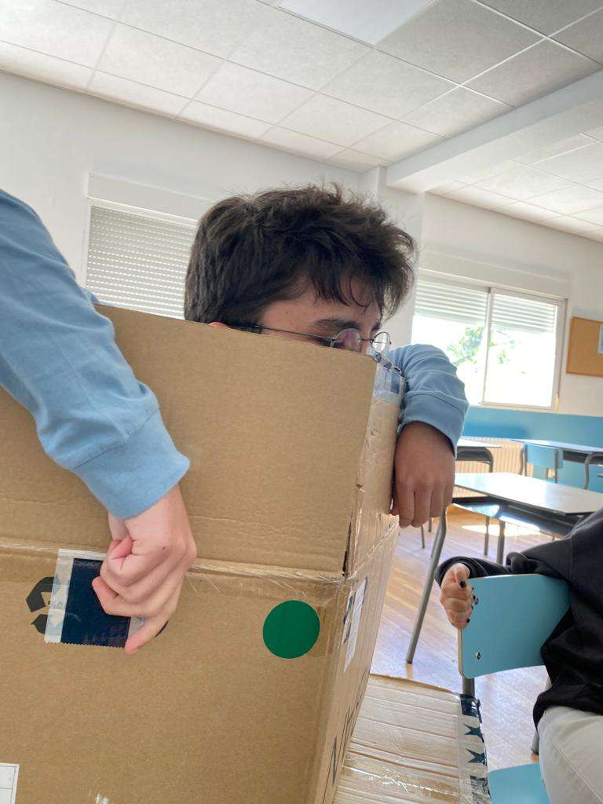
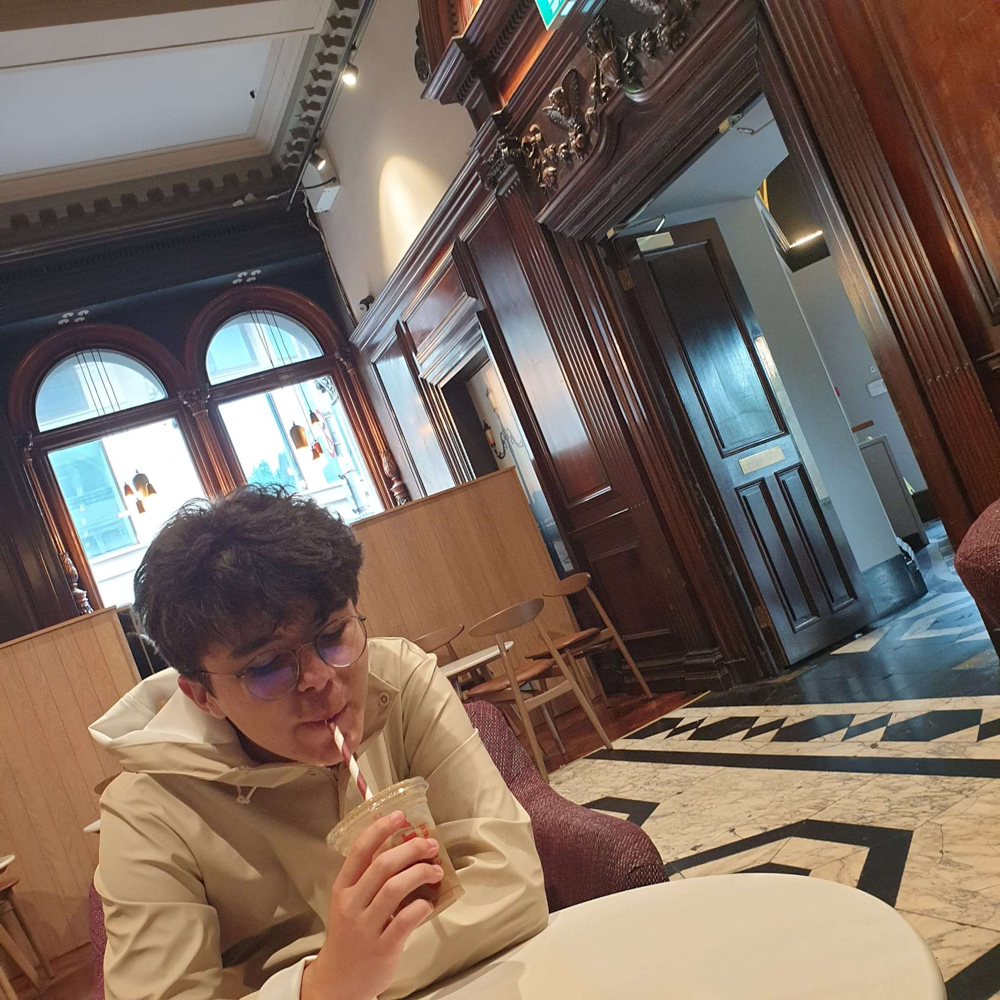
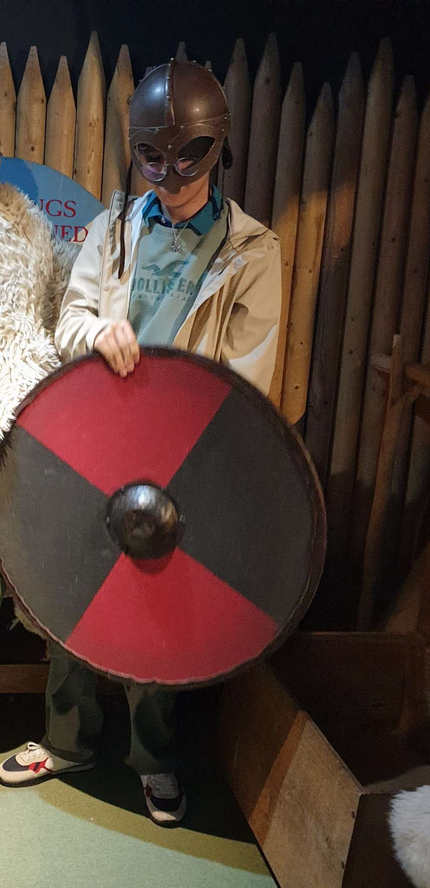
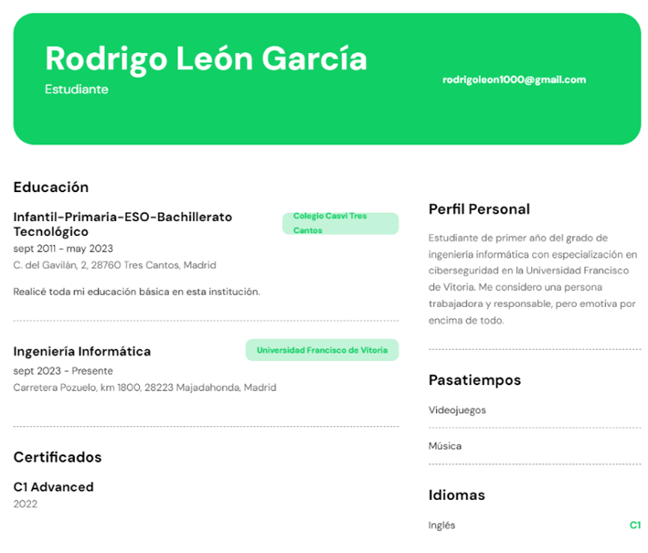

¡Esa es una muy buena pregunta! Soy Rodrigo León García y nací en Madrid, España.
Tengo 18 años y me encanta la música (como probablemente hayas adivinado). Soy estudiante de primer curso de ingeniería informática en la Universidad Francisco
de Vitoria. Aquí tenéis alguna
que otra foto mía:



Estudié en el colegio Pinosierra que más tarde pasaría a llamarse colegio Casvi Tres Cantos. Nunca me
cambié de colegio y estudie allí desde infantil hasta bachillerato. Mi primer contacto con la música ocurrió cuando tenía más o menos 12 años, cuando me invitaron
a unirme al coro de la escuela, donde estuve dos años cantando y observando a la gente tocar instrumentos. Así, decidí aprender
a tocar el piano por mi cuenta.
Al comenzar el bachillerato intenté apuntarme al programa IB que estaba siendo implantado poco a poco en el colegio, pues
quería estudiar en el extranjero, pero debido a que no se pudo incorporar de manera satisfactoria nos ofrecieron un programa
mixto en el cual realizaríamos el bachillerato nacional e internacional a la vez y decidí dedicarme solo a un bachillerato después de 3 meses trabajando en ambos a la vez.
Me gusta escuchar música y tocar tanto el piano como la guitarra. No he viajado mucho, pero lo poco
que he viajado me ha encantado. También me entretengo jugando a videojuegos con varios amigos que estamos
repartidos por todo el mundo, desde Estados Unidos hasta Países Bajos o incluso Lituania. Cuando encuentre
tiempo me gustaría aprender sobre fotografía y viajar alrededor del mundo.
¡Y eso es prácticamente todo lo que tienes que saber sobre mí! Aquí adjunto mi curriculum vitae:

1985-Presente | Radiohead © | Todos los derechos reservados